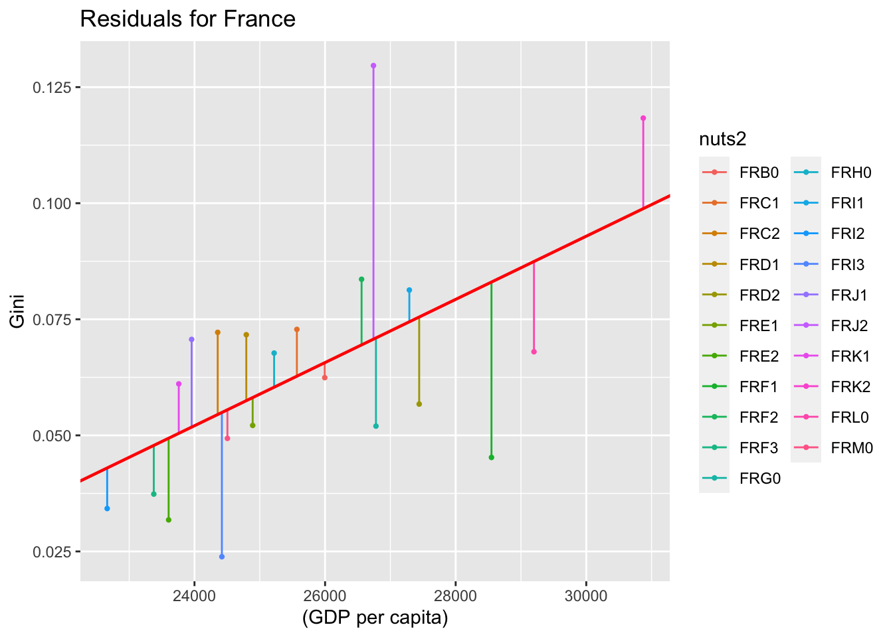
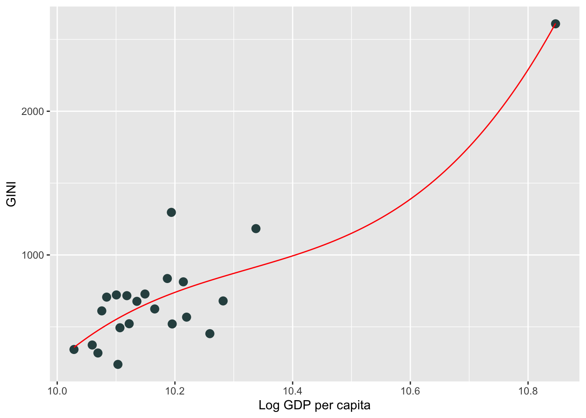
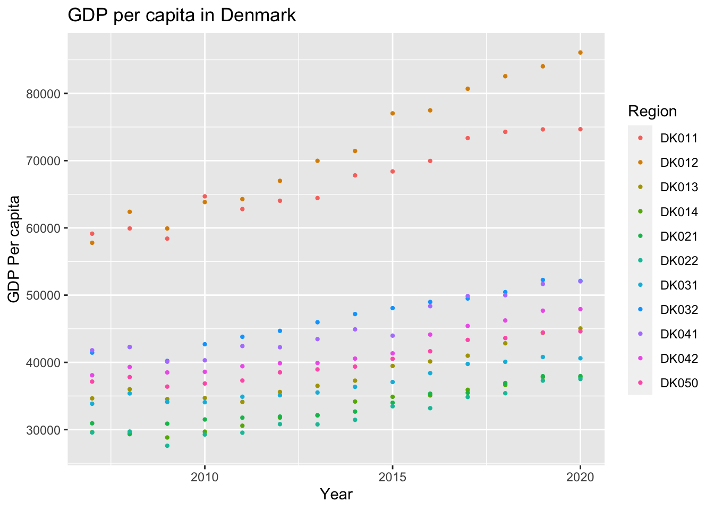
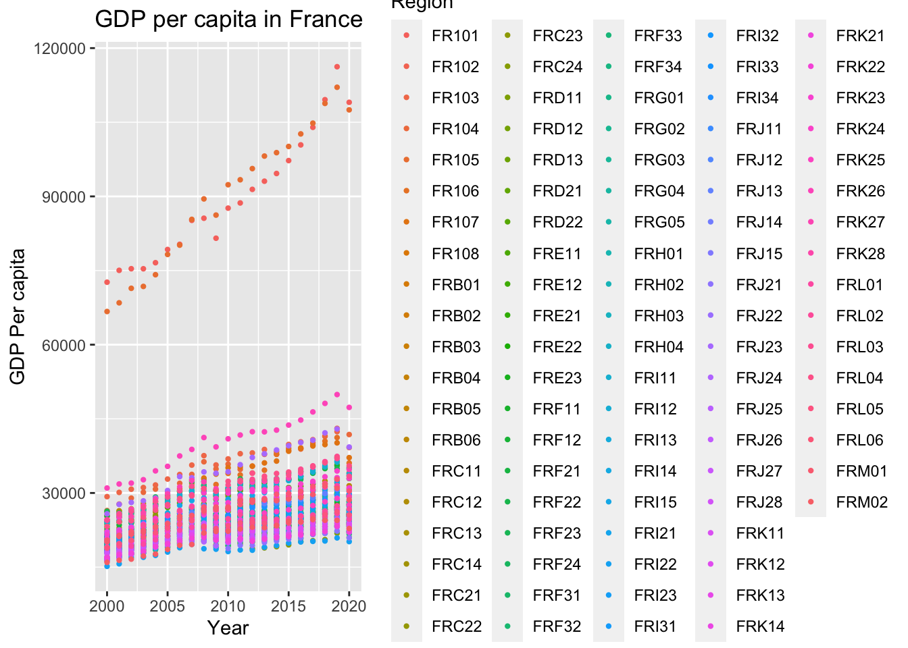
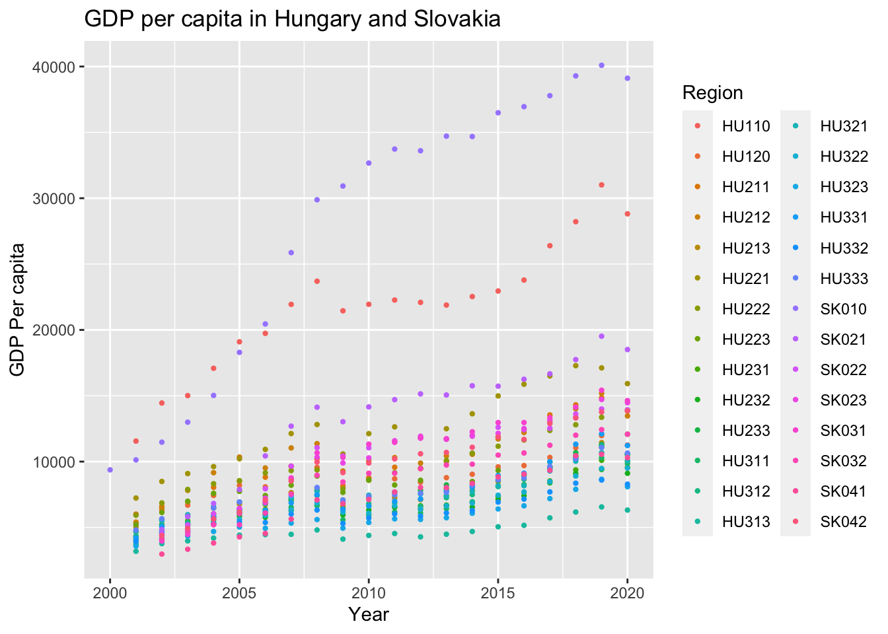

Assignment MSB104
Introduction
In the subject MSB104 econometrics, this year we will hand in an assignment divided into four assignments throughout the semester. The assignments must be written and calculated in the software R. We are group one and the countries that will be representing in our assignment is: Denmark, France, Hungary, Portugal and Slovakia. We started by downloading datasets from Eurostat that we needed to use in the assignment. We then calculated GDP per capita and wrote about descriptive statistics. We have looked at and calculated regional inequity, growth and inequity and other determinants of inequity. We have taken various tests to find/or see if there are large differences and to see if there is, for example, heteroskedasticity. Along the way, we have discussed various graphs, models and findings. Finally, we have looked a bit at fixed effects using panel data.
1. Sub-national GDP
The data sets contain GDP (nama_10r_3gdp) and population (demo_r_pjanaggr3,pi) for our five countries over the last 20 years, on a NUTS3 level.
We would like to have the information we get from these two data sets collected in one data set. A new data set called gdppop has been created and is the data set that will be used further in the task.
Further in the assignement, we will need three new variables that we will collect as new data sets from Eurostat. The first data set is education, were we want to look at the amount of people who have higher education. We can use this to see if education has any effect on Gini in the different regions. In the second dataset we will look at transport. Find out how many motorways there is in kilometers, and use this to see if it has something to say on the Gini. In the third, called demographic datasets, we want to look at life expectancy age. Life expectancy age can we use to see if there is a young or an aging population. We will use this to look at the effect on Gini.
1.1 GDP per capita
GDP per capita means how much the GDP divide between the population and to calculate GDP per capita, we use the formula: \[ y_i = GDP_i / population_i\] The litle i refers to nuts3 regions in our countries.
To create an overview of GDP per capita in our nuts3 regions, we use descriptive statistics. We can look at descriptive statistics by using numbers, like in our table Table 1 . A descriptive statistic contains the min and the max values. i.e. the smallest and the highest GDP per capita for the countries. We can find first quartile and third quartile. The first quartile is the observation between the median and the lowest value, and looks at the 25% lowest values from the 75% highest. The median looks at the value that is observed the most times in the middle of the observations. The third quartile is then, naturally enough, the value between the median and the highest value. It also shows mean which tells us what the average observation for all regions are.
In Table 1 we get an overview of GDP, population and gdp per capita for all the nuts3 regions. The mean of GDP per capita for all nuts3 regions are 22 588 euro per capita. The smalest value are 4394,85 Euro per capita and the highest are 92 361,75 Euros per capita.
GDP is about the economy of each individual country. It tells us something about how the economy is developing in the various country. It is calculated from all goods and services produced in the country in a given year and substracted from the products or services used in this production SSB
As previously mentioned, we have been allocated five countries, where we will, among other things, look at the population. Populations means the people who live in these countries or within the geographical regions, like nuts2 regions.
It is not easy to draw any conclusion from the summary in Table 1, as we assume that there are large regional inequaties between the regions in the countries we have in our sample.
In order to get a more defined picture of the various regions and see if any of them stand out, we want to divide the countries up, with the exception of Hungary and Slovakia. They both have few regions, so we choose to look at them together. By looking at the countries separately, we will hopefully get a better overview of outliers in the various countries. We first look at how GDP per capita has developed over the past 20 years. In order to be able to compare the countries in a given period we choose to only look at the year 2010. When we look at a specific year and country we can look at GDP per capita and see differences in the different regions. If there are large deviations in some of the regions, we can possibly remove them so that the differences are not too large.
1.2.1 Denmark
Denmark is not a particularly large country in Europe nor does it have many nuts3 regions Figure 3. Copenhagen which is the capital of Denmark, and the regions around Copenhagen are the ones that stand out. Furthermore, we will also see that it is the capitals that are often the richest regions.
Based on Table 2, we can see that the three richest regions in Denmark in 2010 are Copenhagen (DK011), Copenhagen area (DK012) and Sydjylland (DK032). On Table 3 we can see that the three poorest regions in Denmark in 2010 are Vest- og Sydjælland (DK022), Bornholm (DK014) and Østsjælland (DK021). Between the poorest people in Østsjælland and the richest people in Copenhagen, there is a difference of more than 30,000 Euro per capita.
1.2.2 France
France is a country in southern Europe with over 100 nuts3 regions. Some of these regions are colonies in other parts of the world. It is not easy to distinguish the different regions. Figure 4 shows us that it is the capital, Paris in France that stands out. Based on the summary in ?@tbl-4 , we can see that there is a difference between min and max. If we look more closely at the figures, it is possible to see that the reason may be that France has colonies in other countries that are included. These colonies are located in Africa and South America which has a negative effect on France’s overall GDP. For further research, we have chosen to remove these regions from the data set.
After the FRY regions have been removedin Figure 5, we are left with 96 nuts3 regions. fylle inn info om fig 3
Based on Table 4 the three richest regions in 2010 are Paris (FR101), Hauts-de-seine (FR105) and Rhône (FRK26). Paris og Hauts-de-seine stands out clearly from the other region with a difference of approximately 50,000 Euro pr capita. The three poorest regions in 2010 is Creuse (FRI22), Ariège (FRJ21) and Meuse(FRF32)Table 5. In these regions we find little variation in gdp per capita. Between the Paris and Meuse there is a difference of over 74,000 Euro per capita. It looks like there is a greater between rich and poor in France than in Denmark. An assumption could be that since France has a lot more regions then Denmark some of the regions in France can be very small compare to the few regions in Denmark.
1.3.3 Hungary and Slovakia
Hungary and Slovakia are both countries in Central Europe. As we can se on Figure 6 both Bratislava and Budapest had a good growth until 2008. After the growth in 2008, we see that the curve goes down for a period with Bratislava. At the same time Budapest had a larger increase. The other regions in these countries have had more stable growth.
Together, Hungary and Slovakia has 28 regions. In Table 6 The three richest regions in 2010 are Bratislava (SK010), Budapest (HU110) and Trnava (SK021). This refers to what we have commented on previously countries that the capital cities are often the richest regions when we look at gdp per capita. In ?@tbl-9 it shows that the poorest regions in year 2010 are Nògràd(HU313), Szabolcs-Szatmàr-Bereg(HU323). All the poorest regions belongs to Hungary, which may mean that Hungary has a lower GDP per capita than Slovakia.
There is a difference of approximately 25,000 Euro per capita between the richest and poorest regions in Hungary in 2010. Based on these observations, the capital Bratislava is the richest region. Since we do not see any of Slovakia’s regions among the lowest, we can assume Slovakia has a higher GDP per capita than Hungary has for its inhabitants.
1.2.4 Portugal
Portugal is a country in southern Europe. Portugal has two archipelagos, each representing a different region. In Figure 7 we can see that there is a steady growth in the regions, but all regions have had a slight decline between 2010-2012. After 2012, it appears that all regions have increase again.
Portugal has 25 regions. Table 7 shows us that the three richest regions in 2010 are Lisboa(PT170), Alentejo Litoral (PT181) and Algarve (PT150). Lisboa has a litle higher GDP pr capita then the rest of the whealtiest regions. In Table 8 we can see that the three poorest regions in 2010 are Tãmega e Sousa (PT11C), Alto Tãmega (PT11B) and Beiras e Serra da Estrela (PT16J) . There is approximatly 14,000 Euro per capita, in difference between the richest and the poorest regions in Portugal.
In all the countries, we see that it is the capitals that stand out the most and have the highest GDP per capita among their inhabitants. Paris has the highest GDP per capita and the poorest regions are to be found in Hungary.
2. Regional inequality
Regional inequality is seen together with economic growth. In many countries, economic growth affects the regions by, for example, increasing migration to the big cities. It will affect the smaller regions in that the number of inhabitants is reduced and jobs are lost. In addition to geography and unemployment, it can also apply to population growth, education and investments, which in turn apply to both state and private investments.
Regional inequality can be measured using Gini coefficients. We create the Gini coefficient by using this formula
\[ GINW_j=\frac{1}{2 \bar{y_j}} \sum_{i}^{n_j}\sum_{l}^{n_j}\frac{p_i}{P_j} \frac{p_l}{P_j} |y_i-y_l| \]
A Gini coefficient must be between 0 and 1. If it’s 0, it means that there is little inequality, and if it’s closer to 1, it means that there is a greater degree of inequality between rich and poor. We calculate a Gini coefficient by looking at how much wealth and income there is in a country and then how it is distributed among the population. When we have calculated the gini coefficients, we will also run a test on the data we have to see if we find outliers. Outliers are values that are either very high or very low compared to the other data we have.
2.1 Gini for all countries
[1] 0.2840999When we look at all the nuts2 regions in the selected countries, we have 46 observations. The total Gini for all countries in 2010 is 0.28. Looking at all the countries together does not give an answer that says much. We also want to look at the countries individually. When we look at the countries separately, we will also be able to see who has a Gini of 0 - which means whether they have a perfect correlation.We will first look at how the Gini has evolved over the last 20 years before we again just look at Gini for 2010.
2.1.1 Denmark
In Figure 8, there are two regions in Denmark that have varied quite a bit over the past 20 years. They still stay below 0.025, which shows us that there is just a small difference between rich and poor in these regions. A region that really stands out is DK01. It is a bit further up the graph than the other regions. Although it is not close to 0, there is a greater difference between rich and poor here than in the other regions.
As we can see in Table 9 the Gini coefficients are between 0 and 0,11 in Denmark. In Table 10 Denmark has a region, DK05 which is an outlier. In this region we don’t have much data so the little data we get gives us a perfect gini of 0. Denmark has only five nuts2 regions, and it doesn’t gives us much data to work with.
2.1.2 France
France is a bit different from Denmark with a lot of regions. In Figure 9 there are so many regions that we are unable to see them properly. What is shown well is that the vast majority of regions follow each other evenly by being below 0.1. There are still some regions that stand out and we can see that FR10 stands the most out with a Gini of 0.3, while FRJ1 and FRK1 fluctuate quite a bit from 2005 to 2020.
In France, the Table 11 shows that the Gini coefficients are between 0,02 and 0,26. France has a slightly higher gini than Denmark, which means that the inequality is slightly greater in France. Without the FRY regions the Table 12 shows that France doesn´t have any outliers.
2.1.3 Hungary and Slovakia
In Figure 10 Hungary and Slovakia have large fluctuations in their regions . One of the regions with the most fluctuations is HU22 where they are down to a Gini of 0.075 in 2012, while in 2016 they are up to a gini of approximately 0.12. Hungary and Slovakia are small countries in Eastern Europe and we assume that this is the reason why there are large fluctuations.
When we look at the Table 13 the Gini coefficient in Hungary is between 0 and 0,085 . Based on Table 15 Hungary has two regions, Budapest (HU11) and Pest (HU12) which are outliers. Looking at the year 2010, Budapest and Pest do not have any data that we can look at.
Table 14 tells us that in Slovakia, the Gini coefficient are between 0 and 0,081. Slovakia has one region called SK01 as we can see in Table 15, that is an outlier. Then we are left with three regions from which we can obtain data in Slovakia. The reason why we combined Hungary and Slovakia further up in the task was precisely that they also had few regions at the nuts3 level, in the same way that they also have now have few nuts2 levels.
2.1.4 Portugal
In the Figure 11 for Portugal, we can see that the Gini in several of the regions has been declining over the past 20 years. That is to say, the differences between rich and poor have narrowed over the years. PT18 stands out somewhat in that there are strong fluctuations over the years.
Based on Table 16 Portugal has their Gini coefficient between 0 and 0,08. Portugal has four regions that are outliers, Algarve (PT15) Lisboa(PT17), Regiäo Autònoma dos Acores (PT20) and Regiäo Autònoma da Madeira (PT30). Regiäo Autònoma dos Acores and Regiäo Autònoma da Madeira are both archipelagos, belonging to Portugal which may be the reason why they are outliers as we can see in Table 17. Portugal doesn’t have many NUTS 2 regions, and when four of them have no data, there is not much confidence in the result we get.
2.2 Noteworthy outliers
We have calculated GDP per capita for all the countries combined and per country we have been given. We saw that when we collected all the countries we got 22,805.13 Euros per capita. Denmark had a significantly higher GDP per capita than the other countries. Hungary had the lowest with only 8781.69. France has colonies in other continents, we chose to remove these regions, this so that GDP would not be affected by these regions that belong to others continents. When we took away the FRY regions, there was no outliers in France, but we do find in all the other countries.A noteworthy outliner is a value that stands out greatly.
All the regions that are outliners are regions that have only one province. In Hungary, Slovakia and Portugal (HU11, HU12, SK01, PT15 and PT 17) the outliers are linked to the capitals. Capitals are often large areas, which only have one region. Portugal also has two island groups (PT20 and PT30) that come up as outliers. The last region with outliers is found in Denmark (DK05), this is a small region. What we find noteworthy in outliers imay be in Denmark, cause all the others are linked to the capitals. It is also special that France does not have any outliers.
3. Growth and inequity
Next, we will be looking at growth and inequality in the countries at nuts2 regions. We will also include more variables to see if there are other conditions that affect growth in GDP per capita.
Moving forward we will make linear models (lm) and a form of regression that is simple. A simple regression model will show us the relationship between two variables. By using this model we can find the Y value when X = 0 (Lander 2014) s. 265).
The Gini value goes from 0 to 1. Where 0 is a perfect equality and 1 is inequality. When the Gini is 0, it is likely to believe there is missing som data for 2010. Further we will use filter to take away the Gini´s who are zero.
In Figure 12 we can see how the Gini is distributed per country. France has one point that stands out from the others, while the other most countries have their scores between 0 and 0.1. After we divided the countries into Nuts2 regions, we see that the countries, apart from France, do not have that many observations. we therefore choose to only look at all the countries together or France in further tests
When we calculate regional development against regional inequality, we use the values we have found in Gini and GDP per capita. To estimate the effect between a regional development and regional inequality we can use the formula:
\[ Regional inequality_i = \beta_1 + \beta_2Regional development_i+u_i\]
This equation tells us what the regional inequality will be when the regional development is = 0 The slope of the curve will show us how much inequality will change for each increase in development. If we increase regional development by 1, regional inequality will increase by 1.
In the Figure 13 we look at the relationship between Gini and GDP per capita in 2010 for all countries. The graph shows that the points are above and below the regression line. There are a point on the right that stand out significantly which tells us that the region have increased more than the other regions. When we look at the grey field, it tells us if we take the same test a thousand times, the blue regression line will always be within the grey field.
In this regresion we will look at the impact regional development (X) has on regional inequality (Y). This means how much an increase in X will have on a increase in Y. We use Gini as Y and GDP per capita as X.
| France | All | |
|---|---|---|
| Const. | -1309.688 *** | 398.346 *** |
| (222.518) | (142.989) | |
| gdp_per_capita | 0.076 *** | 0.012 ** |
| (0.008) | (0.006) | |
| N | 22 | 38 |
| R2 | 0.814 | 0.122 |
| Note): *** p < 0.01; ** p < 0.05; * p < 0.1 T statistics in brackets. | ||
In this model we see that France has 22 observations and an R2 that is 81.4%, which means that a large part of the increase in GINI has a connection with an increase in GDP per capita. When we look at all countries together we see that we have 38 observations and that R2 is only 12.2%. which means there is less correlation between a increase in Gini and a increase in GDP per capita. Both Gini’s have three stars, which means that we can trust the effect.
3.1 Goodness of fit model
Looking at the simple regression that we have made, it is R2 that can help us explain whether the variables have any relationship with each other. R2 tells us how much spread we have in the independent variable. The value in R2 can be between 0 and 1. When R2 is 1 it tells us that the independent variable has all the influence on the dependent variable. If it is 0, the independent variable has no influence on the dependent variable (Johannessen, Christoffersen, and Tufte 2004) .s.345
The table above shows a negative Gini compared to when we look at all the countries together, and we therefore choose to remove Paris from the data set to see if this has any effect on the model. When we removed Paris, the plot in Figure 14 shows
By carrying out a regression analysis, we get a line that gives us an overview of where the best hits are made. Residuals show the distance to the line of best fit. There can be both positive and negative residuals. If the value is above the line it is positive and if it is below the line it is negative.
Warning: Using `size` aesthetic for lines was deprecated in ggplot2 3.4.0.
ℹ Please use `linewidth` instead.
Looking at all the countries together, we can see that the regression line has both positive and negative hits on the line. The regions in each country is close to each other except from France and Denmark which are a little more spread out on the line. Hungary, Portugal and Slovakia, with the exception of one, only have positive residuals. France has a lot more regions and it looks like there are only a few positive ones. Considering that there is a big difference in observations in each country, France is probably the most reliable here as well, with definitely most observations.

When we look closer at France, there is 21 observations, when we remove Paris. With several observations it makes France more trustworthy then the other countries. When we separate France in a separate graph, we can see that some of the regions in France stand out. It will always be best if the points follow the lines, i.e. are on the line. In France, we can see that the regions are either above the line or below the line. This means that there is great variation between the regions. When we compare the two graphs above, we see that France has a steeper line. A steeper line tells us that small changes in GDP have a large effect on Gini.
3.3 The classical OLS assumptions
For linear regression there are seven OLS assumptions that are classical. To produce the the best estimates we usually use the first six assumptions.
- Linearity: The regression model is linear in the coefficients and the error term When we look at all the countries it is close to linear, but when we look at France who have the most nuts2 regions, the regions either is above or under the line.
- No Perfect collinaerity:The error term has a population mean of zero We can see that there are variations in the X variable both in France and in all the countries combined, which may indicate that we have fulfilled the second requirement for OLS
- Random sampling: All independent variables are uncorrelated with the error term The third assumption is about having a random dataset, even if we have made changes such as removing regions in France, we will still say that we have a random dataset based on the population.
- Exogenity: Observations of the error term are uncorrelated with each other. We do not have homoscedasticity, which means that the error term has the same variation in the independent variable. This is the most difficult to test for. In this assignment, we look at the effect X has on Y, but we do not look to see if there are other variables that have an effect on X.
- Homoscedasticity: The error term has a constant variance (no heteroscedasticity). When we look at the graph over all the countries Figure 1, the variations of the error term should be constant on both sides of the regression line and no one should be far from the line, both sides should look the same. When we look only at France Figure 2, we see that the differences are smaller. We do not see complete homoscedasticity in France, but it is more moderate than when we look at all the countries.
- Normality: The error term is normally distributed (optional). In our data, we see among some of the countries, example Denmark has only 5 observations at the nuts2 level, while France has 22 observations. We cannot imagine that Denmark has enough observations to obtain a natural normal distribution, which could make us worried about error terms in relation to normal distribution. France, which has 22 observations, we think have a large enough sample for a normal distribution, but the optimum would have been to have a larger data set.
4. Other determinants of inequity
We have chosen to look at kilometers, education and life expectancy age to see if there are other determinants of inequity. We want to see what the new variables have to say on the Gini.
In a multiple linear regression model, we use several variables to see the effect of an increase in gini (Y). We can use the formula:
\[ Y_i = \beta_0 + \beta_1X_{1i} + \beta_2X_{2i}+... + \beta_kX_{ki}+u_i \]
| GDP pc & Education | GDP pc & Road | GDP pc & Life expectancy age | All | |
|---|---|---|---|---|
| Const. | -626.382 | -787.523 | -7485.920 | -5793.492 |
| (768.574) | (693.589) | (4846.010) | (5446.709) | |
| gdp_per_capita | 0.061 ** | 0.051 * | 0.050 * | 0.034 |
| (0.024) | (0.029) | (0.027) | (0.032) | |
| Education | -9.901 | -5.844 | ||
| (9.590) | (10.239) | |||
| Motorway | 0.200 | 0.187 | ||
| (0.205) | (0.205) | |||
| Lifeexp | 83.811 | 69.306 | ||
| (63.240) | (68.586) | |||
| N | 21 | 21 | 21 | 21 |
| R2 | 0.344 | 0.340 | 0.367 | 0.412 |
| Note: *** p < 0.01; ** p < 0.05; * p < 0.1 T statistics in brackets. | ||||
in this regresion modell France has 21 observations, such tests gives the best results the more observations we have. R2 tells us something about whether the variables have an influence on the dependent variable or not. If the values have an increase for each new model, this tells us that we have a connection. If the value decreases, they will say that there is no connection between these variables. In our case, we can see that R2 rises right up to the last modell with all varables. We end up with a R2 which says that 41,2% of the change in Gini can be attributed to these variables. In the first row we can see the effect Gpd per capita and Education has on Gini. It is only Gdp per capita that gets significant stars, which means that we can only say that an increase in this variable has a positive effect on Gini. In the rows with Road and Life exp.age, we can see that GDP per capita gets a significant star. When we look at all the countries together, we can’t find any significant stars, which means that combinations of these variables do not have a particular effect on a possible increase in the Gini.
France was the only country with many observations in 2010, therefore we only tested the new variables in this country. We wanted to find out whether education, the number of km of motorway and life expectancy had an effect on inequalities in France and about these variables have a connection with how prosperous the various regions are. after we carried out this regression, we cannot say that these variables had any particular effect on the Gini.
We wanted to see if variable education, motorways and life expectancy had a connection with growth and inequality in France in 2010. based on the test we carried out, we found no particular connection between these variables. we conducted some simple tests to see if there was any relationship between the Gini and these new variables. when we look in (tab-21?) about education we see that we get a p value of 12.8%. we can then say that there is a small connection between Gini and education. on the variables life expectancy (tab-22?) and motorway (tab-23?) we only found small P-values, so we therefore see little correlation between Gini and these variables. What we like to know is that people with higher education like to move to more central places where the job opportunities are greater, which can often be reflected in the fact that we find higher Gini values in the bigger cities.
5. Test if the effect of development is significantly different for different subsets of countries in your data set
In the next part we are going to test if the effect of development is significantly different for different subsets of countries in your data set. Then we will look at alternative functional forms (e.g.log, cubical estimates) of our previous estimates on the relationship between regional development yi on regional inequality GINIWj. We will make arguments for two forms that might fit the data better and plot the corresponding scatter plots with the fitted estimate line. We are suppose to report the related estimates and give a verbal interpretation of our estimate coefficients. We will also test for heteroskedasticity in the two new and in the old model. We will discuss if we can interpret the estimates as casual and suggest potential remedies for eventual problems.
| Only France | No France | Interaction | |
|---|---|---|---|
| (Intercept) | -1309.688 *** | 636.786 *** | 636.786 *** |
| (222.518) | (109.725) | (96.010) | |
| gdp_per_capita | 0.076 *** | -0.001 | -0.001 |
| (0.008) | (0.005) | (0.004) | |
| Fra | -1946.474 *** | ||
| (268.767) | |||
| gdp_per_capita:Fra | 0.076 *** | ||
| (0.010) | |||
| N | 22 | 16 | 38 |
| R2 | 0.814 | 0.001 | 0.675 |
| F statistic | 87.679 | 0.015 | 23.510 |
| P value | 0.000 | 0.905 | 0.000 |
| Note: *** p < 0.01; ** p < 0.05; * p < 0.1 T statistics in brackets. | |||
To test the effect of differences for the different subgroups of countries, we have created the dummy variable. In a regression we cannot use country as a variable, but if we turn the countries into dummy variables, we get opportunities to filter on the countries. We have converted France to 1 and the remaining countries to 0. We can then look at the regions in France as one and the other countries as another one. Then we can see if there are differences between those who are living in France and for those who lives in the other countries. We have 38 observations in total, 22 of the observation belongs to France and 16 og the observations belongs to the other countries. It is not a lot of observations in total.
Only France shows the effect for France only. No France shows the effect for the other countries and will not inclued France. Interaction shows for all countries and iteration of development with France dummy. Using this, it is possible to see that Only France has a very high R2, and they have three significant stars, which means that an increase in Gini can be explained by an increase in GDP per capita. When we look at No France, we find little correlation between an increase in GINI and an increase in GDP per capita. We can also look at this, when we see that R2 is only 0.001. we therefore cannot see any relationship between these variables.
Interaction looks at all the observations with interaction for dummy france, it has a high significant level on several of the variables, which means that an increase in the GINI will also increase Gdp Per capita. we can say this with 67.5% certainty.
In Only France and the interaction we can se that we have a P value that is 0. It is lower than all of our signifikant levels. We therefore have to retain the null hypothesis. But we can doubt that the P value is zero. It is very unlikely, and we can´t say that there is any pattern, but rather a random coincidence which means that we get zero in P value.
No France has a P value of 0.905. It is a high value, and we therefore retain the null hypothesis. but it is still possible to doubt whether this is a pattern or a random connection. Since R2 is so low. As mentioned earlier, we do not have that many observations, and that is something that can have an impact on the result.
6. Explore alternative functional forms
We will now make two new tests with different arguments, just to see if we can get data that fits better. In both tests we choose to do a level log test. In the first alternative model, we used Log on the variables. Log means that large variations in the observations will have less impact on the results
| Only France (log) | No France (log) | Interaction (log) | |
|---|---|---|---|
| (Intercept) | -25888.226 *** | 964.239 | 964.239 |
| (3021.912) | (948.962) | (851.588) | |
| log(gdp_per_capita) | 2613.527 *** | -35.524 | -35.524 |
| (296.685) | (99.557) | (89.341) | |
| Fra | -26852.465 *** | ||
| (3423.069) | |||
| log(gdp_per_capita):Fra | 2649.051 *** | ||
| (337.542) | |||
| N | 22 | 16 | 38 |
| R2 | 0.795 | 0.009 | 0.661 |
| F statistic | 77.600 | 0.127 | 22.060 |
| P value | 0.000 | 0.727 | 0.000 |
| Note: *** p < 0.01; ** p < 0.05; * p < 0.1 T statistics in brackets. | |||
In the first test, we can see that only France still has a high significant level of its variables and R2 is at 79.5%, which means that we can still say that an increase in Gini will also result in an increase in GDP per capita. No, we can see that France has an increase in GINI compared to the previous test. And it has a slight increase in R2 to 0.9%. Interaction has the same increase in Gini as No France and we see that we have a significance level of 66.1%.
Code
gdppop2010 <- gdppop2010
lm.26 = lm(Gini2 ~ I(log(gdp_per_capita)), filter(gdppop2010, Fra==1))%>%
coeftest(vcov = hccm, save = TRUE)
lm.27 =lm(Gini2 ~ log(gdp_per_capita) + I(log(gdp_per_capita)^2), filter(gdppop2010, Fra==1)) %>%
coeftest(vcoc = hccm, save= TRUE)
lm.28 = lm(Gini2 ~ log(gdp_per_capita)+ I(log(gdp_per_capita)^2)+I(log(gdp_per_capita)^3), filter(gdppop2010, Fra==1)) %>%
coeftest(vcoc = hccm, save= TRUE)
#Gen Table
huxreg(
list("Only France (log)" = lm.26, "Only France (log) ^2" = lm.27, "Only France (log) ^3" = lm.28),
statistics = c("N" = "nobs",
R2 = "r.squared", "F statistic" = "statistic",
"P value" = "p.value"),
stars = c("*" = 0.1, "**" = 0.05, "***" =0.01),
note = "Note: {stars} T statistics in brackets."
)| Only France (log) | Only France (log) ^2 | Only France (log) ^3 | |
|---|---|---|---|
| (Intercept) | -25888.226 *** | 140539.293 | -8379653.489 |
| (8320.401) | (118156.750) | (12401102.051) | |
| I(log(gdp_per_capita)) | 2613.527 *** | ||
| (820.237) | |||
| log(gdp_per_capita) | -29336.198 | 2433140.001 | |
| (22677.780) | (3584029.427) | ||
| I(log(gdp_per_capita)^2) | 1532.175 | -235586.839 | |
| (1087.443) | (345111.302) | ||
| I(log(gdp_per_capita)^3) | 7607.198 | ||
| (11071.726) | |||
| N | 22 | 22 | 22 |
| R2 | 0.795 | 0.814 | 0.819 |
| F statistic | 77.600 | 41.704 | 27.187 |
| P value | 0.000 | 0.000 | 0.000 |
| Note: *** p < 0.01; ** p < 0.05; * p < 0.1 T statistics in brackets. | |||
In the second option, we only look at Only France and we use Log (GDP per inhabitant) in the second and third square, in addition we use France’s dummy variables. This gives us a reduction in GINI when we raise to the second square and a large increase in GINI when we raise to the third square. when we look at R2 we see that this increases from 79.5% on the first model to 81.9% on the last model.
Code
#plot
filter(gdppop2010, Fra==1) %>%
ggplot(aes(x = log(gdp_per_capita), y = Gini2)) +
geom_point(color = "darkslategray", size = 3) +
stat_function(color = "red", fun=function(x) lm.28[[1,1]]+lm.28[[2,1]]*x+lm.28[[3,1]]*x*x+lm.28[[4,1]]*x*x*x)+
theme_gray () + xlab("Log GDP per capita") + ylab("GINI")
In this Scatterplot we see the 22 observations in France. in this plot we see how the coefficients are distributed. The x-axis shows log GDP per capita. The y-axis shows the Gini. we can see that most of the points are located in the lower part of the plot. we have a point that stands out, with a much higher value. We suspect that the point that stands out is Paris as this has been shown in previous tests, but we can’t say for sure. tallene beveger seg oppover med streken = positiv korelasjon.
Next, we are going to test for heteroscedasticity, we will use the Breusch-Pagan test. This test takes into account that the errors are normally distributed (Wooldridge 2015). we can make a hypotesis by using this formula.
\[ \begin{aligned} H_{0}:& \operatorname{Var}\left(u \mid x_{1}, x_{2}, \ldots, x_{k}\right)=\operatorname{Var}(u \mid \mathbf{x})=\sigma^{2} \\ &\operatorname{Var}(u \mid \mathbf{x})=E\left(u^{2} \mid \mathbf{x}\right)-[E(u \mid \mathbf{x})]^{2}=E\left(u^{2} \mid \mathbf{x}\right) \\ &\Rightarrow E\left(u^{2} \mid x_{1}, \ldots, x_{k}\right)=E\left(u^{2}\right)=\sigma^{2} \\ &\text{The mean of } u^2 \text{must not vary with } x_{1}, \ldots, x_{k} \end{aligned} \]
to test for heteroskedasticity we can use this estimate
\[\begin{aligned}& \widehat{u}^{2}=\delta_{0}+\delta_{1} x_{1}+\cdots+\delta_{k} x_{k}+\text { error } \\& H_{0}: \delta_{1}=\delta_{2}=\ldots=\delta_{k}=0 \end{aligned}\]
Code
#Estimate
reg <- lm(Gini2 ~ (gdp_per_capita),data = gdppop2010)
# Breusch-Pagan test F-Test (LM estimator)
bptest(reg)$p.value BP
0.003548012 The first test is Gini and GDP per capita. We do get a BP value of 0.0035. This is lower than 0.01. We then want to reject \(H_0\) Hence we facing Heteroskedasticity!
Code
#Estimate
reg<-lm(Gini2 ~ log(gdp_per_capita), filter(gdppop2010, Fra==1))
# Breusch-Pagan test F-Test (LM estimator)
bptest(reg)$p.value BP
0.6720791 The second test is Gini and log GDP per capita and we have filtered on France. We got a BP value of 0.672. This is higher than 0.10. We then can’t reject \(H_0\).
Code
#Estimate
reg <- lm(Gini2 ~ log(gdp_per_capita),data = gdppop2010)
# Breusch-Pagan test F-Test (LM estimator)
bptest(reg)$p.value BP
0.04131447 The third test is Gini and log GDP per capita. We got a BP value of 0.0413. That is higher than 0.01. Then we can´t reject \(H_0\) With a P-value = 0,04131447 we can not reject \(H_0\) (homoskedasticity).
7. Discuss if we can interpret the estimates as causal.
To estimate the causal effect, we can carry out regression models. Just to see if the variables we are working with have an effect on each other. In this section, we have carried out three different tests. Based on the tests we cannot say with certainty that an increase in GDP per capita has an effect on the Gini. Based on some of the tests,there are very likely that it has an effect on the Gini. Anyhow, we cannot say if it is the only reason.
In this assignment, we have chosen to look at Gini and GDP per capita. In most of the tests we have carried out, we have rejected \(H_0\), which may indicate that an increase in Gini and GDP per capita have a connection. We have not found anything to suggest that increases in these variables are only dependent on each other. Therefore we think it is fair to say that it is very unlikely that these increases are only dependent on each other.
In this assignment, we have looked at the relationship between Gini and GDP per capita. In most of the tests we have carried out, we have seen that an increase in the Gini also results in an increase in GDP per capita. but we have not found anything to suggest that all increases can be due to the connection between these variables. in the scatterplot we saw a positive correlation, we can also say there that our variables have a positive effect on each other. we have previously said that the Gini coefficient represents the difference between wealty and poor, so we can probably say that rich people tend to have the opportunity to educate themselves more than poorer people, and that there is often more drive in areas with more educated people, which we perhaps can see reflected in the GDP in the same areas.
Through the assignment, we have seen that there are differences between the countries when it comes to GPD and GINI, but also the size of the countries and population. According to our observations, Denmark, Portugal and France appear as wealthier countries, while Hungary and Slovakia are at the other end of the scale. All these countries are part of the EU, so if they had chosen to invest in a region for development, this could have had a greater effect on the poor countries than it had on the wealthier countries.
In the thesis, we have looked at the variables life expectancy, education and kilometres/transport. The effect of these variables have varying results. Other variables we can look at that may have an effect on the Gini are the different health benefits in the countries, wage levels and unemployment. If there is high unemployment in the countries, we imagine that this could have a negative effect on the Gini.
8. Penal Estimates
Use your entire data set to estimate the effect of regional development yj on regional inequality GINIWj in a penal setup. Present estimates that contain the following fixed effects separately and jointly:
country fixed effects, year fixed effects NUTS 2 fixed effects (Please ignore for this assignment the alternative determinants from assignment 2)
Panel estimates are
Code
plm.1 <- paneldata %>%
plm(Gini ~ gdp_per_capita + I(gdp_per_capita^2), data = ., index = c("nuts2"), model="within", effect ="twoways") %>% coeftest(vcov. = vcovHC, type = "HC1", save = TRUE)
plm.2 <- paneldata %>%
plm(Gini ~ gdp_per_capita + I(gdp_per_capita^2), data = ., index = c("Year"), model = "within", effect = "twoways") %>% coeftest(vcov. = vcovHC, type = "HC1", save = TRUE)
plm.3 <- paneldata %>%
plm(Gini ~ gdp_per_capita + I(gdp_per_capita^2), data = ., index = c("nuts2", "Year"), model="within", effect ="twoways") %>% coeftest(vcov. = vcovHC, type = "HC1", save = TRUE)
plm.4 <- paneldata %>%
plm(Gini ~ gdp_per_capita + I(gdp_per_capita^2), data = ., index = c("nuts0", "Year"), model="within", effect ="twoways") %>% coeftest(vcov. = vcovHC, type = "HC1", save = TRUE)Warning in pdata.frame(data, index): duplicate couples (id-time) in resulting pdata.frame
to find out which, use, e.g., table(index(your_pdataframe), useNA = "ifany")Code
#Gen Table
huxreg(
list("Regio FE" = plm.1, "Year FE" = plm.2, "Regio & Year FE" = plm.3 , "Country & Year FE" = plm.4 ),
statistics = c(N = "nobs", R2 = "r.squared"),
stars = c("*" = 0.1, "**" = 0.05, "***" =0.01),
note = "Note): {stars} T statistics in brackets."
)| Regio FE | Year FE | Regio & Year FE | Country & Year FE | |
|---|---|---|---|---|
| gdp_per_capita | -0.016 | -0.289 *** | -0.023 | -0.728 *** |
| (0.048) | (0.033) | (0.048) | (0.264) | |
| I(gdp_per_capita^2) | 0.002 | 0.029 *** | 0.003 | 0.076 *** |
| (0.005) | (0.003) | (0.005) | (0.029) | |
| N | 995 | 995 | 995 | 995 |
| R2 | 0.002 | 0.068 | 0.004 | 0.341 |
| Note): *** p < 0.01; ** p < 0.05; * p < 0.1 T statistics in brackets. | ||||
In this panelty estimate, we have used the entire original data set with all the countries. We see that we have 995 observations. We can see that we do not get a very high R2 on any of these models. but we find three significant stars on both the second and fourth models.
discusses the hypothesis that we can observe a significant and positive effect of development on regional inequality for your set of countries.
Appendix
Assignment 1
Table 1
| Variable | N | Mean | Std. Dev. | Min | Pctl. 25 | Pctl. 75 | Max |
|---|---|---|---|---|---|---|---|
| GDP | 163 | 15752.566 | 22785.25 | 900.58 | 3844.17 | 18502.14 | 196621.1 |
| Population | 163 | 587254.816 | 474888.351 | 42255 | 268026 | 701432 | 2808205 |
| gdp_per_capita | 163 | 22587.719 | 12242.241 | 4394.853 | 14907.009 | 26876.639 | 92361.757 |
Figure 1

Table 2
| Year | Region | gdp_per_capita |
|---|---|---|
| 2010 | DK011 | 6.47e+04 |
| 2010 | DK012 | 6.38e+04 |
| 2010 | DK032 | 4.27e+04 |
Table 3
| Year | Region | gdp_per_capita |
|---|---|---|
| 2010 | DK022 | 2.93e+04 |
| 2010 | DK014 | 2.97e+04 |
| 2010 | DK021 | 3.15e+04 |
Figure 2

Table 4
?(caption)
Population gdp_per_capita
Min. : 73851 Min. : 8292
1st Qu.: 290938 1st Qu.: 21721
Median : 523771 Median : 24361
Mean : 643505 Mean : 26286
3rd Qu.: 818596 3rd Qu.: 27871
Max. :2606234 Max. :116235 Table 5
Figure 3

Table 6
| Year | Region | gdp_per_capita |
|---|---|---|
| 2010 | FR105 | 9.24e+04 |
| 2010 | FR101 | 8.76e+04 |
| 2010 | FRK26 | 4.1e+04 |
Table 7
| Year | Region | gdp_per_capita |
|---|---|---|
| 2010 | FRI22 | 1.82e+04 |
| 2010 | FRJ21 | 1.88e+04 |
| 2010 | FRF32 | 1.93e+04 |
Figure 4

Table 8
| Year | Region | gdp_per_capita |
|---|---|---|
| 2010 | SK010 | 3.27e+04 |
| 2010 | HU110 | 2.19e+04 |
| 2010 | SK021 | 1.42e+04 |
Table 9
| Year | Region | gdp_per_capita |
|---|---|---|
| 2010 | HU313 | 4.39e+03 |
| 2010 | HU323 | 5.38e+03 |
| 2010 | HU332 | 5.72e+03 |
Figure 5

Table 10
| Region | gdp_per_capita |
|---|---|
| PT170 | 2.41e+04 |
| PT181 | 2.14e+04 |
| PT150 | 1.7e+04 |
Table 11
| Region | gdp_per_capita |
|---|---|
| PT11C | 9.92e+03 |
| PT16J | 1.05e+04 |
| PT11B | 1.08e+04 |
Figure 6

Table 12
| Year | nuts2 | gini_n2 |
|---|---|---|
| 2010 | DK01 | 0.114 |
| 2010 | DK02 | 0.0153 |
| 2010 | DK03 | 0.053 |
| 2010 | DK04 | 0.00978 |
| 2010 | DK05 | 0 |
Table 13
| nuts2 |
|---|
| DK05 |
Figure 7

Table 14
| Year | nuts2 | gini_n2 |
|---|---|---|
| 2010 | FR10 | 0.261 |
| 2010 | FRB0 | 0.0624 |
| 2010 | FRC1 | 0.0728 |
| 2010 | FRC2 | 0.0722 |
| 2010 | FRD1 | 0.0717 |
| 2010 | FRD2 | 0.0567 |
| 2010 | FRE1 | 0.0521 |
| 2010 | FRE2 | 0.0318 |
| 2010 | FRF1 | 0.0452 |
| 2010 | FRF2 | 0.0836 |
| 2010 | FRF3 | 0.0373 |
| 2010 | FRG0 | 0.052 |
| 2010 | FRH0 | 0.0677 |
| 2010 | FRI1 | 0.0813 |
| 2010 | FRI2 | 0.0342 |
| 2010 | FRI3 | 0.0239 |
| 2010 | FRJ1 | 0.0707 |
| 2010 | FRJ2 | 0.13 |
| 2010 | FRK1 | 0.0611 |
| 2010 | FRK2 | 0.118 |
| 2010 | FRL0 | 0.068 |
| 2010 | FRM0 | 0.0493 |
Table 15
| nuts2 |
|---|
Figure 8

Table 16
| Year | nuts2 | gini_n2 |
|---|---|---|
| 2010 | HU11 | 0 |
| 2010 | HU12 | 0 |
| 2010 | HU21 | 0.0686 |
| 2010 | HU22 | 0.086 |
| 2010 | HU23 | 0.0299 |
| 2010 | HU31 | 0.065 |
| 2010 | HU32 | 0.0764 |
| 2010 | HU33 | 0.0515 |
Table 17
| Year | nuts2 | gini_n2 |
|---|---|---|
| 2010 | SK01 | 0 |
| 2010 | SK02 | 0.0712 |
| 2010 | SK03 | 0.054 |
| 2010 | SK04 | 0.0814 |
Table 18
| nuts2 |
|---|
| HU11 |
| HU12 |
| SK01 |
Figure 9

Table 19
| Year | nuts2 | gini_n2 |
|---|---|---|
| 2010 | PT11 | 0.0849 |
| 2010 | PT15 | 0 |
| 2010 | PT16 | 0.0671 |
| 2010 | PT17 | 0 |
| 2010 | PT18 | 0.0747 |
| 2010 | PT20 | 0 |
| 2010 | PT30 | 0 |
Table 20
| nuts2 |
|---|
| PT15 |
| PT17 |
| PT20 |
| PT30 |
Assignment 2
Figure 10

Figure 11
Estimate the effect of regional development on regional inequality GINI for the year 2010
`geom_smooth()` using formula = 'y ~ x'Figure 15
`geom_smooth()` using formula = 'y ~ x'
Table 21
| term | estimate | std.error | statistic | p.value |
|---|---|---|---|---|
| (Intercept) | 0.1578 | 0.0616 | 2.5609 | 0.0186 |
| Edu | -0.0028 | 0.0020 | -1.3974 | 0.1776 |
Table 22
| term | estimate | std.error | statistic | p.value |
|---|---|---|---|---|
| (Intercept) | -2.3535 | 0.7756 | -3.0343 | 0.0065 |
| lea | 0.0297 | 0.0095 | 3.1284 | 0.0053 |
Table 23
| term | estimate | std.error | statistic | p.value |
|---|---|---|---|---|
| (Intercept) | 0.0467 | 0.0212 | 2.2047 | 0.0393 |
| Road | 0.0001 | 0.0000 | 1.4131 | 0.1730 |